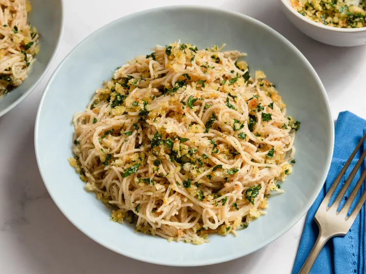

Caesar Pasta

Description
This Caesar pasta has all the flavors of a traditional Caesar salad—fragrant garlic, the umami of anchovies (using Worcestershire sauce as a stand-in), salty Parmesan cheese, and the crunch of a crisp crouton—but it is in a lovely angel hair side dish.
Ingredients
- Angel hair pasta
- Garlic
- Worcestershire sauce
- Parmesan cheese
- Croutons
Instructions
- Cook the angel hair pasta according to package instructions until al dente. Drain and set aside.
- In a large skillet, heat some olive oil over medium heat. Add minced garlic and sauté until fragrant, about 1-2 minutes.
- Add a splash of Worcestershire sauce to the skillet and stir to combine with the garlic.
- Toss the cooked pasta into the skillet, ensuring it is well coated with the garlic and Worcestershire mixture.
- Remove from heat and sprinkle generously with grated Parmesan cheese. Toss again to combine.
- Serve the pasta topped with crunchy croutons for added texture.
Home